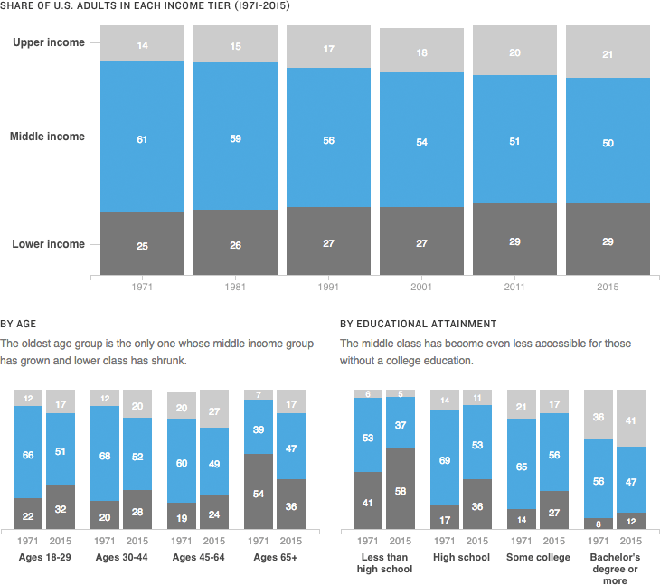

The Shifting Middle Class
A
Pew Research Center study
found that as the share of Americans in the “middle class” has shrunk, the upper and lower classes have grown — the upper class at a higher rate.
